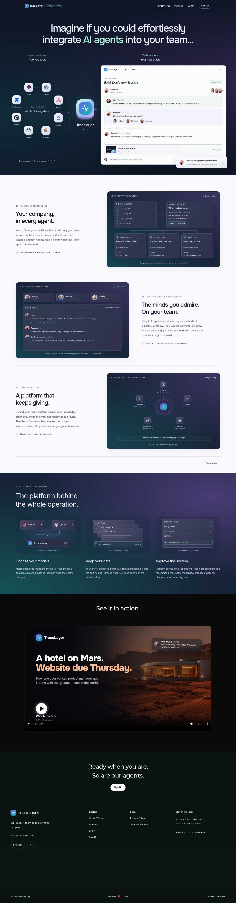
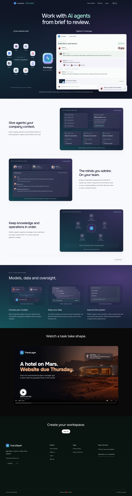

The existing design with shorter headings, fewer repeated captions and the product demonstration first on mobile. Original fonts, illustrations, colours and desktop composition retained.
Preview only. Both captures use the same viewport and reduced-motion setting. The earlier app comparison is preserved separately.

